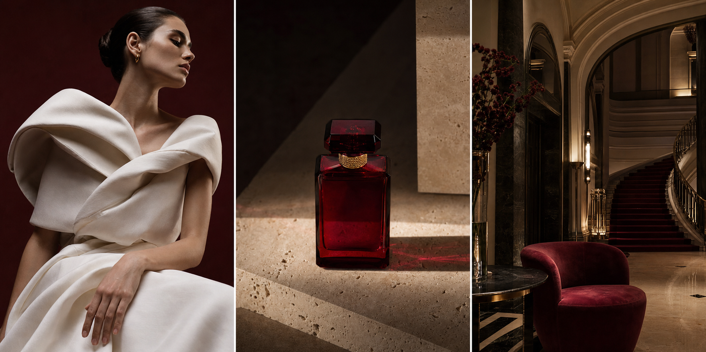
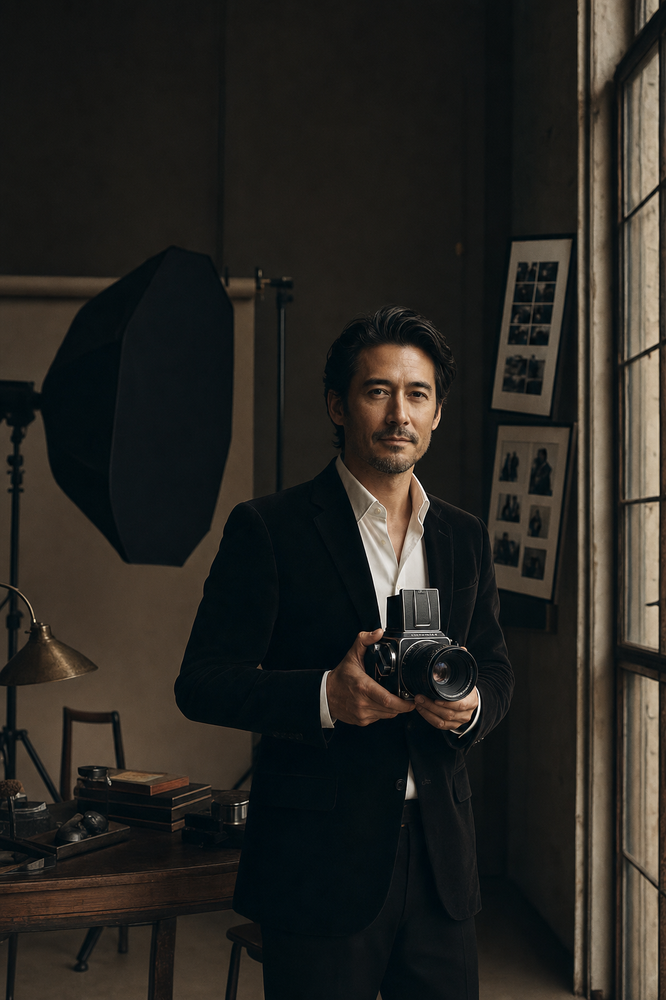

I

STILL LIFE PHOTOGRAPHY · 2026
Maison
Vesper
A fragrance series composed through shadow, stone and a single note of oxblood.

I photograph objects, materials and spaces with quiet precision.
Explore the work↓Luxury photography · Paris · Saigon
Elegance is not the absence of detail.
It is the presence of intention.
Working between Paris and Saigon, Étienne photographs objects, garments and interiors for maisons that value material, atmosphere and enduring visual quality.
EST. 2012Selected photography commissions · 2022—2026

STILL LIFE PHOTOGRAPHY · 2026
A fragrance series composed through shadow, stone and a single note of oxblood.
FASHION PHOTOGRAPHY · 2024
A photographic study of silk, proportion and the quiet intelligence of the hand.
INTERIOR PHOTOGRAPHY · 2022
A historic hotel photographed through its light, patina and architectural memory.
Biography / Étienne Mori
Étienne Mori is an independent luxury photographer known for tactile still life and atmospheric interior imagery.
His photographs begin with the character of a material: the weight of glass, the fall of silk, the memory held in stone and timber. Light is shaped to reveal, never decorate.
After assisting leading editorial photographers in Paris, he established his independent studio in 2012 and now photographs campaigns and spaces across Europe and Asia.
YEARS BEHIND
THE CAMERA
Professional experience
A career built through assisting, editorial commissions and an independent photographic practice across Europe and Asia.
Still life, fashion and interior commissions for independent maisons, hotels and editorial publications.
Led studio productions for beauty and fashion clients, from lighting tests through final image selection.
Supported medium-format editorial and product shoots, specialising in lighting, camera systems and set workflow.
Built the foundations of a professional practice through production, analogue processing and location assignments.
Skills & capabilities
Shaping controlled light for products, portraits and reflective materials.
ADVANCED · 14 YEARSDigital and analogue medium-format systems for exceptional tonal depth and detail.
HASSELBLAD · PHASE ONE · FILMStill life, editorial portraiture and architectural framing with a restrained visual language.
STILL LIFE · FASHION · INTERIORSColour grading and detailed retouching that preserve natural material and skin texture.
CAPTURE ONE · PHOTOSHOP · COLOURSelected recognition & press
“Mori makes light feel like a material in its own right.”
— OBJECTS & INTERIORS, 2025
Photography commissions / 2026—2027
For still life, fashion campaigns and exceptional interiors.